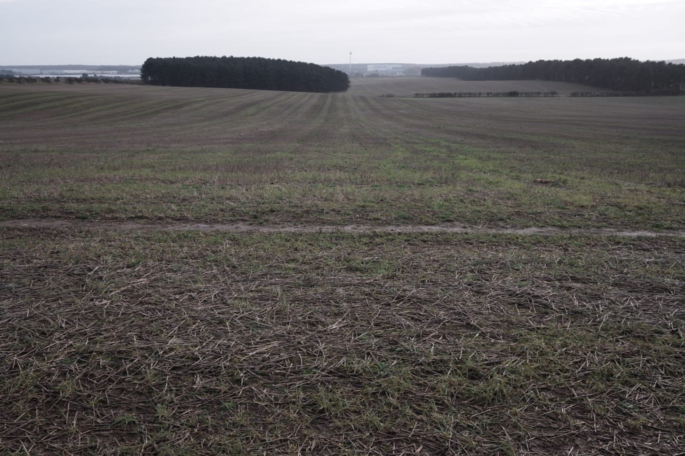
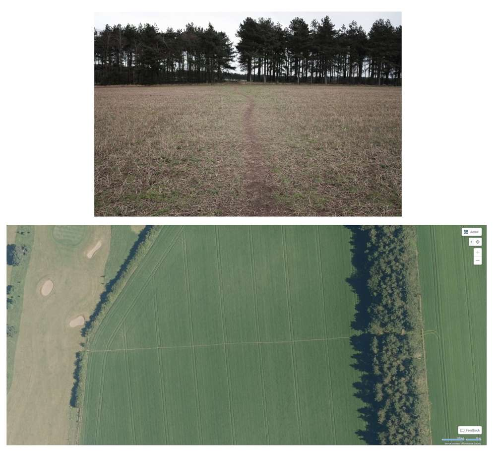
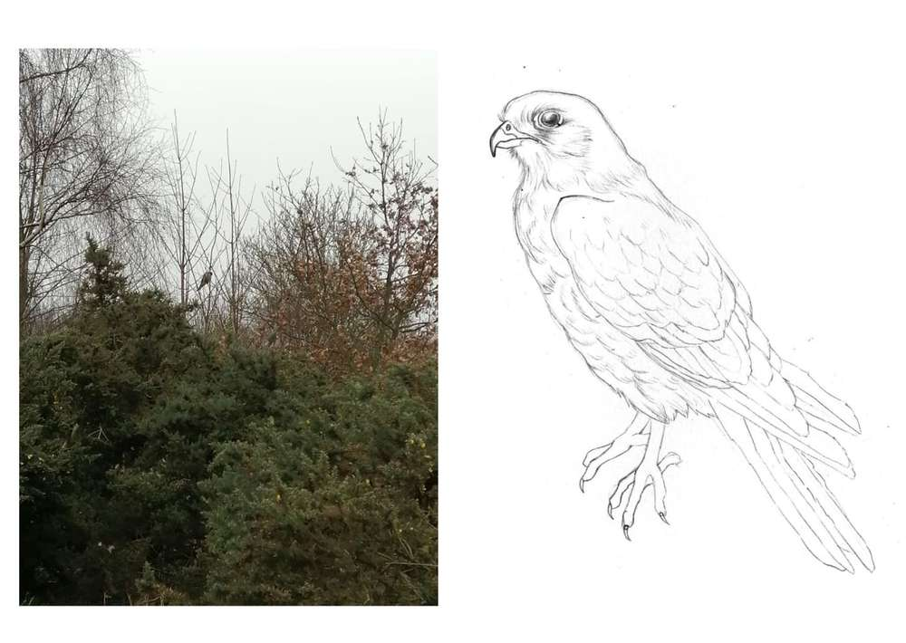

Rich's digital garden
Fun desire paths
This week is a continuation of desire paths.
Walking regularly, we are starting to bore of the usual routes. Winter has set in with the snow having flattened the dead standing flora. Little changes. Subsequently, confronted with a new path we take it.
At a crossroads section of desire paths embedded in a sodden agrarian field, we notice a path that we have not taken. 'Where does that one go to?' It's a route along a hedgerow climbing an incline, it's destination hidden from view. Going forth the hedgerow gives way to an embankment lined with burrows. They smell like hay. The dog wants to enter one, I stop her. At the top of the incline is another set of fields in view of a contemporary cottage and a private plantation. While the higher elevation presents views of the surrounding land with monolithic distribution centres that loom in the distance suggesting a bastard countryside. The path concludes at a familiar bridlepath, making it a 300m component of a circular circuit.
From the incline
{kind=link}
{kind=link}
{kind=link}
The route was an enjoyable deviation, one that I would not take without the desire path. There is reassuring confidence that comes with treading in the same footsteps of the people before us. I recall overhearing a conversation between farmers about desire paths and trespassing: ‘all it takes is one person and others will follow like sheep.’ I can understand the misgivings from agricultural management and I suspect once the fields are prepared for crops, the path will disappear under the plough, perhaps superseded by a new path. This ephemeral quality is part of the fun within the constant reworking of space through the desire path.
In their creation, typical desire paths have clear intention. This path demonstrated by the above images, for example, situated between a golf course and conifer plantation is distinct. From an aerial image, the path is a horizontal line between territories, a scratch upon the earth. In-person, however, its course is vague and flexible, curving and creeping astray without reason. Despite its vague parameters, it has a fixed destination: the other side of the field. It's a practical desire path, a means to quickly traverse between urban and rural territories, making it functional but not fun.
{kind=link}
A fun desire path (fun as in escapism from the uninteresting or conventional) has to be dangerous or leading to the unknown. Danger does not necessarily mean heights or industrial ruins, but a sense of lawlessness while unknown could be a change of perspective. The ideal fun desire path is a new unusual route within a familiar space, preferably leading somewhere new. These paths can be a tool to get lost or Dérive.
Extra
Kestrel Illustration by @haysillustrations
{kind=link}
A sparrowhawk, or is it a kestrel? We can’t decide. I get closer. It’s oblivious, staring down from its perch. I want to take a photo, but the camera has a fixed wide-angle, so I need to get closer. I do so gradually. Lurching over a bush, I raise my camera but not before a lurcher in an orange coat strolls to the tree and the bird is gone. Nearly a week after the event, it's still disputed as to whether it was a sparrowhawk or kestrel.
Bookmarks
- https://www.theguardian.com/lifeandstyle/2020/jun/14/paths-of-desire-lockdown-has-lent-a-new-twist-to-the-unofficial-trails-we-carve - Lockdown desire paths.
- https://rainylune.com/blogs/blog/why-your-instagram-engagement-kinda-sucks-right-now - Instagram is bad. Nothing more to add.
This article is from my newsletter. Consider subscribing, it's free and weekly.
Created
31/01/2021